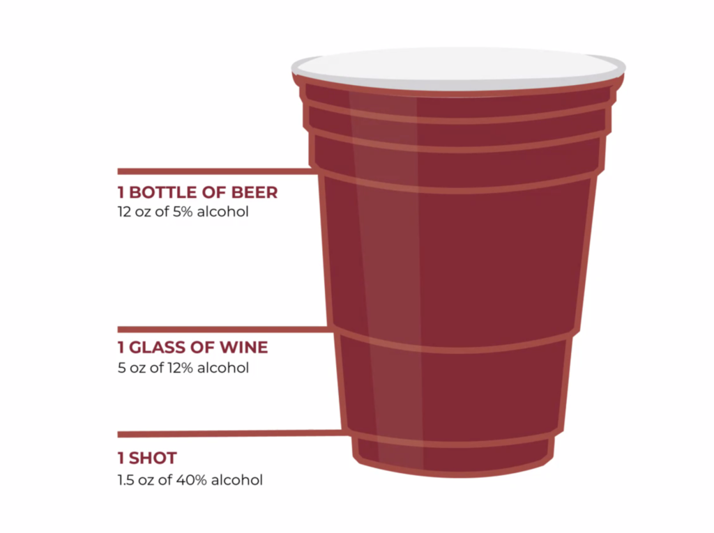

Red Cup - Alcohol Converter
Since most people don't drink pure alcohol, use the converter below to figure out how many red cups of different types of alcoholic beverages you would have to drink to equal the amount in pure alcohol.

We're using red cups as a visual repersentation because the ridges on the sides align with indicated standard drink amounts of different varieties of alcohol.
That comes out to red cups!
*Data for this map was provided by the WHO.